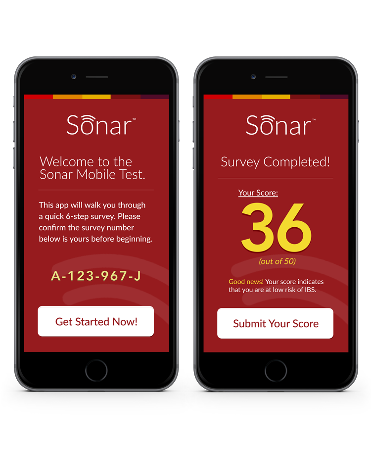

Brief
Position
Senior Experience Designer
Company
Mutare Health
Date
2015
What
Mobile Application
Methodology
Mobile Design
Tablet Design
Atomic Design
Responsibilities
UX Project Director
Design Lead
Wireframes
Prototyping
High Resolution Design
Design Pitch & Presentation
Objective
Two objectives really for two products. One objective was to make a tool that made surveying patients remotely simple. These surveys give important information into their readmission or regression status, and also helps the physician understand if they are getting better, or if their diagnosis needs to change.
The second objective is with the Code Launcher application. That objective is a simple to use, and intuitive tool that is quick to access, and quick to read / digest.
Goals:
- Pateint-driven data to help recovery
- Quick-access alert system

Left: Intro screen & Right: Score
Above, Aron opens his app on his mobile phone. He is prompted by Emma, knowing that it's been a year since his last flu shot, that he should probably get one for this year. Not only that, Emma knows that he's currently at work, and what time his shift ends. Since there is a CVS Minute Clinic inside the Target he works, she knows that he wouldn't need to travel, and could make an appointment 5 minutes after his shift ends. If that wasn't enough, she knows the schedule, and already served up the closest time available for the service (flu shot) from the end of his shift so he doesn't need to call, or find the schedule himself. In one touch, he's done.
Hospital / Facility Mobile Alert System
Quick alerts in every physician's pocket
The Code Launcher was instituted to replace the old beeper/pager systems from the 80s. A lot of hosptial systems still used this believe it or not. This gave an alert tool to all hospital staff that would be quicker than finding a phone or terminal, and allowed for personnel in elevators, closets, lunch breaks and more to be instantly in-the-know.
Process
This being a freelance and solo project, the turnaround was quick, and the work was done linearly. I started by interviewing physicians, found pain points and then immediately went into journey-mapping and wireframing. Once wireframes were created, I showed them to the same physicians I interviewed. Made some iterations and presented the findings and resulting wireframes to the client. Once the high fidelity began, a marketing company started working on some conceptual colors and names. I did not come up with the color palette, but I did submit, and win the logo design. Once high fidelity was completed, a specification document was created to help the development team that took on the creation of the app itself.